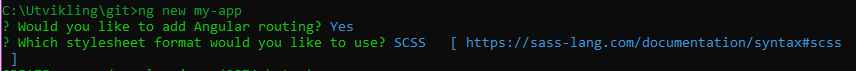
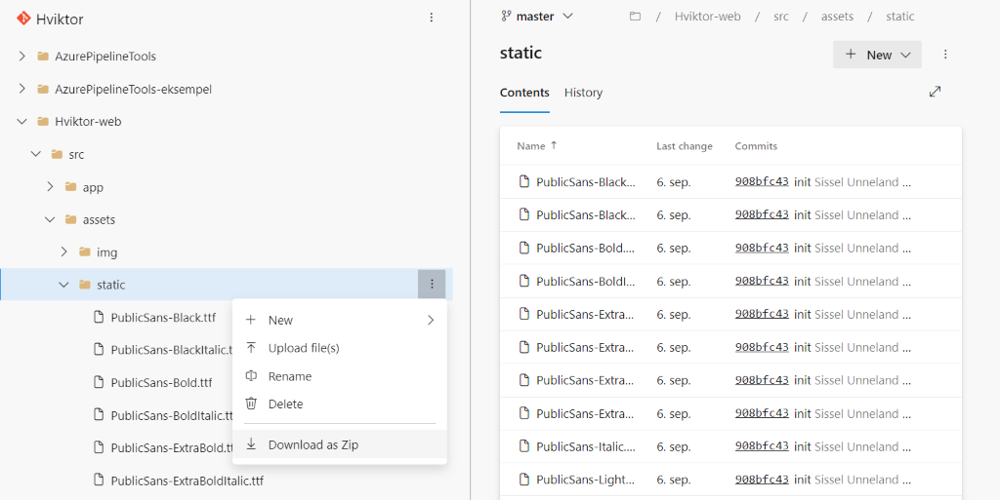
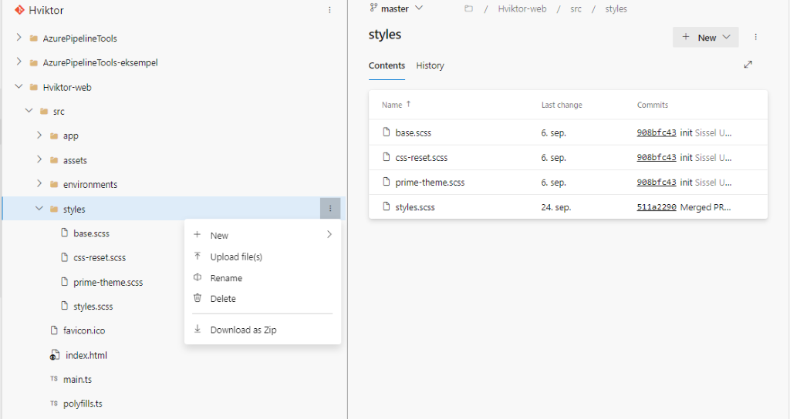
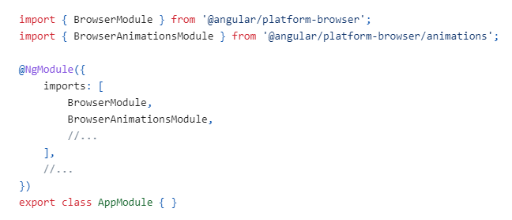
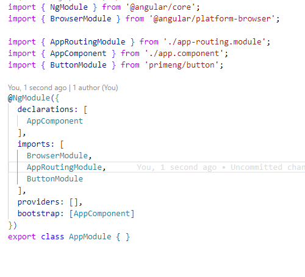

Vi har oppdatert Hviktor til angular/cli@17.0.10 og primeng@17.3.2
💎 npm install -g @angular/cli@17.0.10
💎 ng new my-app
💎 Would you like to add Angular routing? Yes
💎 Which stylesheet format would you like to use? SCSS

💎 Gå inn i prosjektet du oppretta: cd my-app
💎 npm install primeng@17.3.2
💎 npm install primeicons
💎 Last ned font-filene i assets\static\ mappa.
💎 Trykk på de tre prikkene til høyre for static og last ned som zip.
💎 Pakk ut mappen i assets-mappen til prosjektet ditt.

💎 Last ned style-filene i styles mappa.
💎 Trykk på de tre prikkene til høyre for styles og last ned som zip.
💎 Pakk den ut i src-mappen til prosjektet ditt.
💎 Vi anbefaler at man ikke gjør egne lokale endringer i disse filene.

💎 Oppdater angular.json med:
"styles": [
"node_modules/primeicons/primeicons.css",
"src/styles/prime-theme.scss",
"node_modules/primeng/resources/primeng.min.css",
"src/styles/css-reset.scss",
"src/styles/base.scss",
"src/styles/styles.scss",
"src/styles.scss"
],
💎 Vi anbefaler at hvis man skal gjøre egne lokale stil-endringer, at det gjøres i et komponents egen stil-fil eller i prosjektes styles.scss som ligger under "src".
💎 For at enkelte prime-komponentet skal fungere må du importere BrowserAnimationsModule i app.modules filen.

💎 Primeng komponentene som du skal bruke i prosjektet, må legges til og importeres i app.module.ts-filen
💎 Eksempel ved knapp:
